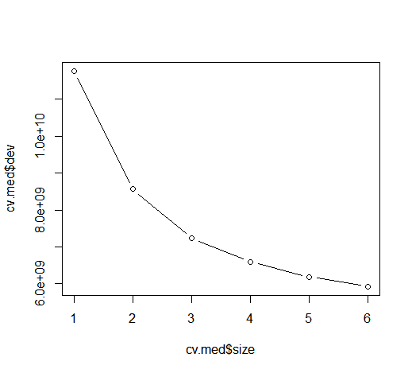
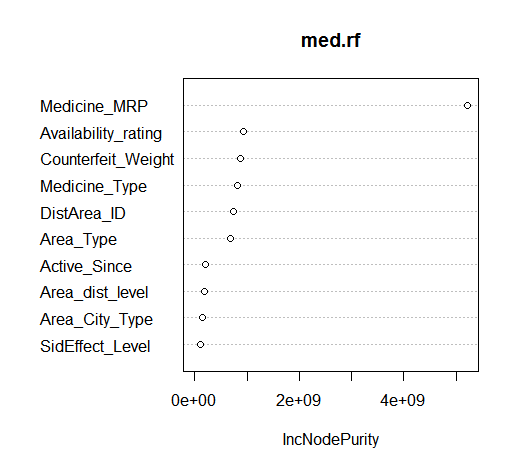

Using K-means clustering algorithm classify the wines into appropriate distinguished optimal clusters having similar properties in each cluster.
Wine quality depends on a lot of factors like alcohol content,presence of sulphates,its pH values etc. The taste,smell and potency of the wine is defined by its chemical ingredients and its percentages in wines. A restaurant needs to classify its wines into different categories depending on its ingredients and label it accordingly for its different category of customers.
K Means Clustering, Silhouette Plots, Segmentation, Standardization and Scaling.
The steps followed in the project are given below:
Clustering of red wines in accordance to its proportions of chemical ingredients is Succesfully done having 5 Clusters and average silhouette value= 0.41.
Click to View Rpubs ReportDecision tree with 6 terminal nodes.
Pruned tree plot showing optimised number of nodes.
Variable Importance plot showing medicine_MRP and Availability Rating as most important variables contributing to the model.